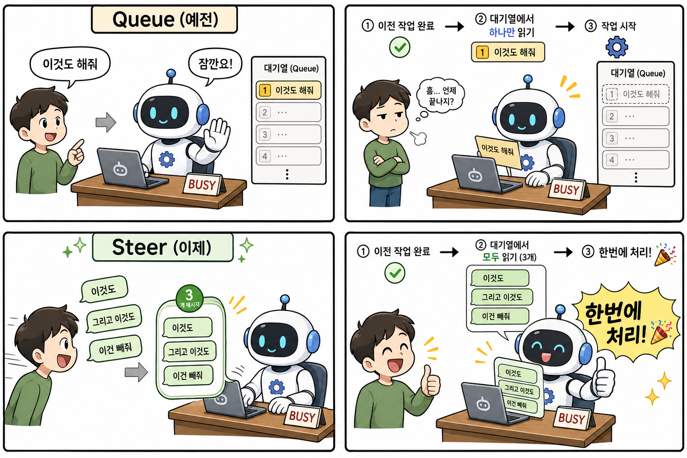

- 공식 웹사이트: openclaw.ai
- GitHub: github.com/openclaw/openclaw
- 문서: docs.openclaw.ai
- 커뮤니티: Discord / X: @openclaw
- 릴리즈 노트: v2026.4.29 (GitHub)
2026년 4월 29일, OpenClaw(오픈클로) 가 새 버전 2026.4.29를 릴리스했습니다. 이번 업데이트에서 가장 눈에 띄는 변화는 AI가 작업 중일 때 메시지를 보내는 방식이 완전히 바뀐 것입니다. 기존의 Queue(대기열) 방식 대신 Steer(스티어) 모드가 기본값이 되었고, NVIDIA 모델 지원, 사람 인식 메모리 등 굵직한 기능도 함께 추가됐습니다.
📌 이번 릴리스 핵심 요약
| 변화 | 내용 |
|---|---|
| 🎯 Steer 모드 기본 전환 | 에이전트 실행 중 추가 메시지를 한꺼번에 처리 |
| 🟢 NVIDIA 제공자 추가 | NVIDIA 호스팅 모델 API 키 연결 공식 지원 |
| 🧠 사람 인식 메모리 | 대화 속 인물 정보를 위키로 기억 |
| 🔒 모델 억제 | 오래된 설정이 잘못된 모델을 강제 로드하는 버그 차단 |
| 🌍 다국어 UI 추가 | 페르시아어, 네덜란드어, 베트남어 등 6개 언어 추가 |
🎯 가장 큰 변화: Queue → Steer 모드
AI한테 말 걸기 방식이 바뀌었다
OpenClaw에서 AI 에이전트가 긴 작업을 하는 도중에 추가로 메시지를 보내면 어떻게 처리될까요? 이 동작 방식이 이번 업데이트에서 근본적으로 바뀌었습니다.

예전 방식 — Queue (대기열)
에이전트가 작업 중일 때 메시지를 보내면 줄을 서서 하나씩 처리했습니다.
작업1 끝 → "이것도 해줘" 처리 → 끝 → "이것도" 처리 → 끝 → "이건 빼줘" 처리
사용자가 여러 개의 수정 요청을 빠르게 보내도, 에이전트는 이전 작업이 완전히 끝나야 다음 메시지를 읽는 구조였습니다. 긴 작업 중에 방향을 바꾸고 싶어도 에이전트가 다 끝낼 때까지 지켜봐야 했죠.
새 방식 — Steer (기본값)
이제 에이전트가 현재 작업을 끝내는 순간, 그동안 쌓인 메시지를 전부 한꺼번에 읽고 처리합니다.
작업1 끝 → "이것도 해줘 + 이것도 + 이건 빼줘" 한 번에 처리
작업하는 동안 생각나는 요청을 그냥 막 보내도 됩니다. 에이전트가 끝나는 순간 다 읽고 한 번에 반영합니다.
500ms 디바운스란?
Steer 모드에는 500ms 폴백 디바운스가 함께 붙어 있습니다. 메시지가 도착하면 500ms 동안 기다렸다가, 그 사이 추가 메시지가 오면 묶어서 한 번에 처리합니다.
메시지 수신 → 500ms 대기
└─ 추가 메시지 있으면 → 묶음 처리 (steer 1회)
└─ 추가 없으면 → 단독 처리 (steer 1회)
500ms와 상관없이 모든 메시지는 Steer로 처리됩니다. 500ms는 단지 빠르게 연속으로 보낸 것들이 따닥따닥 두 번 처리되는 걸 방지하는 장치입니다.
레거시 Queue 모드로 돌아가려면?
/queue queue
채팅에서 이 커맨드 한 줄이면 이전 방식으로 전환됩니다. 원래대로 되돌리려면 /queue default.
설정 파일에서 전역으로 변경하려면:
{
"messages": {
"queue": {
"mode": "queue"
}
}
}🟢 NVIDIA 제공자 공식 지원
OpenClaw에서 NVIDIA가 호스팅하는 AI 모델을 직접 연결할 수 있게 됐습니다.
추가된 내용:
- API 키 온보딩 — NVIDIA API 키 등록 안내 절차 추가
- 정적 모델 카탈로그 — NVIDIA 제공 모델 목록이 코드에 내장되어 별도 API 조회 없이 확인 가능
- 모델 참조 피커 —
nvidia/llama-3.1-70b처럼 provider 접두사 형식이 선택 후에도 그대로 유지됨
Gemini, OpenAI 외에 NVIDIA NIM API(Llama, Mistral 등 NVIDIA 호스팅 모델)를 OpenClaw에 연결해서 쓸 수 있게 된 셈입니다.
🧠 사람 인식 메모리 (People-Aware Wiki)
메모리 시스템에 사람 인식 위키 기능이 추가됐습니다.
- 대화 속에서 등장하는 인물 정보를 자동으로 기억
- 출처 뷰(provenance view)로 어떤 대화에서 기억됐는지 추적 가능
- 대화별
allowedChatIds/deniedChatIds필터로 특정 대화에서만 회상 활성화 가능 - 메모리 하위 에이전트가 타임아웃되면 부분 요약을 반환 (아무것도 없이 실패하지 않음)
🔒 모델 억제: 잘못된 설정이 버그를 만드는 문제 해결
무슨 문제였나?
openclaw doctor --fix가 예전에 설정 파일에 openai-codex/gpt-5.4-mini 항목을 자동으로 써넣는 경우가 있었습니다. 그런데 이 모델은 OpenClaw 매니페스트에서 차단된 모델이라, 차단됐는데 설정에 명시되어 있으면 → 차단을 우회해서 로드 시도 → 어시스턴트 응답이 반복 실패하는 버그가 발생했습니다.
이번 수정
설정 파일에 해당 모델이 명시돼 있어도 매니페스트 차단이 우선하도록 억제 로직을 추가했습니다. 단, ChatGPT/Codex OAuth 인증이 실제로 완료된 경우에는 정상 복원됩니다.
🌍 다국어 UI 추가
제어 UI에 새 언어 6개가 추가됐습니다:
페르시아어(fa), 네덜란드어(nl), 베트남어(vi), 이탈리아어(it), 아랍어(ar), 태국어(th)
🔧 그 외 주요 변경/수정 사항
변경:
pnpm gateway:watch가 기본으로 명명된 tmux 세션에서 실행됨- SQLite 기반 플러그인 상태 저장소 추가 (
api.runtime.state.openKeyedStore) — 재시작 후에도 상태 유지, TTL/eviction, 플러그인 격리 지원 - Tencent Yuanbao 봇 채널 추가
OPENCLAW_SKIP_ONBOARDING환경변수로 자동화 설치 시 온보딩 스킵 가능- ACP, Pi, AWS SDK, TypeBox, pnpm 등 주요 의존성 업데이트
수정:
- 에이전트 실행 중 빈 사용자 프롬프트를 제공자 제출 전에 스킵
- 고아 세션 자동 복구 (복구 시도 영속화)
- 브라우저
executablePath/headless/noSandbox설정 준수
🚀 OpenClaw 업데이트 방법
openclaw update업데이트 후 버전 확인:
openclaw status📚 더 배우고 싶다면 — 오픈클로 실전 도서
《이게 되네? 오픈클로 미친 활용법 50제》🔥 신간
AI 에이전트, 자동화, 크롤링, 이메일, 캘린더, 카카오톡, PPT, 한글 문서, 옵시디언, 데이터 분석, SNS, 블로그, AI 전화까지 코딩 없이 50가지 업무를 자동화하는 스마트폰 속 나만의 AI 비서 실전 가이드
- 📖 304쪽 | 정가 24,000원 (할인가 21,600원)
- 📅 발행일: 2026년 5월 4일
- 🛒 Yes24 구매 링크
- 🎁 출간 기념 저자 무료 특강 진행중
다른 도서
| 도서 | 대상 | 요약 |
|---|---|---|
| 《초등 기적의 AI 공부법》 | 초등학생·교사·학부모 | 어려운 AI 개념을 쉽게 풀어쓴 교육 가이드북 |
| 《회사에서 몰래보는 일잘러의 AI 글쓰기》 | 직장인 | 이메일·보고서·제안서 등 실무 글쓰기 AI 활용법 |
| 《선생님을 위한 8282 업무 자동화》 | 교사·일반 대상 | AI+파이썬+노코드 업무 자동화 실전 가이드 |
| 《선생님의 시간을 지켜주는 생성형AI 활용법》 | 교사 | 출근·수업·업무·퇴근 흐름에 따른 생성형 AI 활용 총정리 |
📌 결론
OpenClaw 2026.4.29는 사용자의 실시간 개입 경험을 혁신한 업데이트입니다. Steer 모드 기본 전환으로 AI와 더 자연스럽게 대화하며 작업을 조율할 수 있게 됐고, NVIDIA 모델 지원으로 선택지도 넓어졌습니다. 긴 작업 중에도 생각나는 요청을 막 보내세요 — 에이전트가 알아서 한꺼번에 처리합니다.